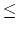

Jashim runs a juice shop near the university campus. Students buy their weekly juice stock from his shop. Every morning juice producers bring their supplies to his shop in jars of two different sizes. Each of these jars can contain a particular volume (expressed in liter) of juice and has marks to indicate that volume. The suppliers have jars of different volumes and jars given today are not necessarily the same in volume as those given yesterday. Had the shop been at some other location, Jashim wouldn't have faced any difficulty with the jars, but the students like to buy the smallest volume of juice Jashim is ready to provide. So, every morning, Jashim has to undergo a long process of making the smallest volume of juice possible with the given jars.
Jashim doesn't have any measuring pot for direct measurement of volume. Rather he uses a very large barrel (of almost infinite capacity) for this purpose. He takes one of the supplied jars and either pours all the juice into the barrel or takes it out from the barrel into the supplied jar to jar's full capacity. The volume of juice transferred in any case is equal to the supplied jar's capacity. In this way, he uses both types of jar and pours juice into or takes it out of the barrel as many times as necessary to get the minimum volume achievable by this mechanism. After, the minimum volume is prepared, he uses this as measuring volume to sell juice of that volume. Now you are to help Jashim.
Input file contains multiple cases. Each case contains two numbers m and n (1nm2147483647) where m and n are the volumes (in liter) of two types of supplied jars. So, you can pour m (or n) liters of juice into the barrel and also take m (or n) liters of juice out of the barrel at each step. You are to determine the minimum volume (in liter) achievable by this process. Besides, determine the minimum number of times you are to pour in and take out from the barrel. Input terminates by a pair of 0's. You need not process this last case.
For each case, output consists of three lines. First line specifies the minimum volume achievable by this process. Second line specifies the minimum number of times volume m has been poured into or taken out from the barrel and third line specifies the same for volume n. If some volume need not be taken out or poured in, print ``m (or n) liter(s) not needed". Print a blank line between successive cases. Follow the format given in sample output.
3240 1376 2607 79 0 0
minimum volume: 8 liter(s) 3240 liter(s) withdrawn 31 times 1376 liter(s) poured 73 times minimum volume: 79 liter(s) 2607 liter(s) not needed 79 liter(s) poured 1 times